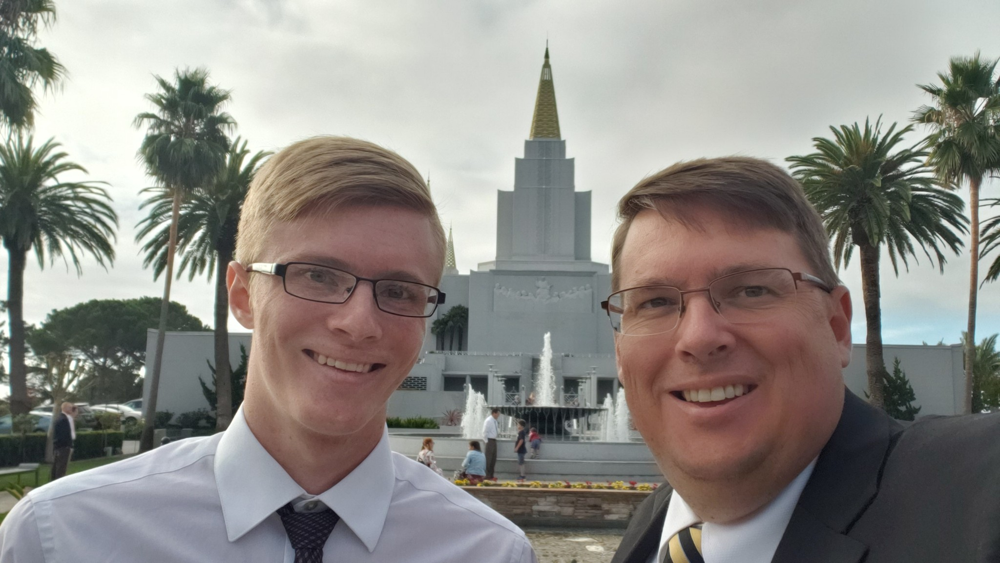

Tyler Wright
My family moved to Pocatello, Idaho from Antioch, California over the summer. This is my first semester at BYUI after transfering from Los Medanos College in Pittsburgh, California. I am currently pursuing a Computer Science degree. I enjoy playing flute, piano, and singing. I served my mission in Las Vegas after being reassigned from Tokyo North due to Covid.
I have been a member of the church all my life. My favorite speaker from among the brethren is Elder Jeffrey R. Holland. My favorite scripture is 2 Nephi 4.
I'm excited to work with all of you this semester!